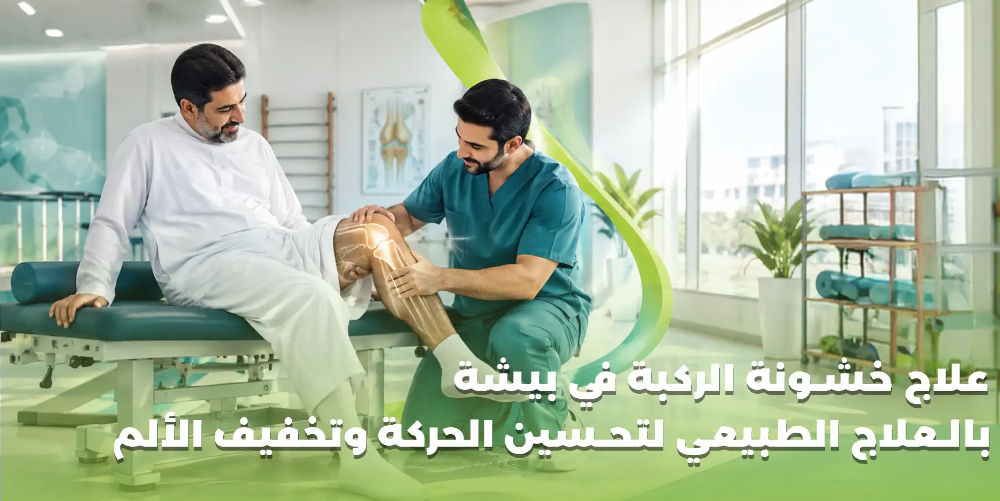

تؤثر خشونة الركبة على قدرة كثير من الأشخاص على المشي والحركة وممارسة الأنشطة اليومية، وقد يبدأ الألم بصورة بسيطة عند صعود الدرج أو الوقوف لفترات طويلة، ثم يصبح أكثر إزعاجًا مع الحركة أو بعد الجلوس لفترة من الوقت. ومع استمرار الأعراض، قد يلاحظ الشخص تيبس مفصل الركبة، أو صعوبة في ثنيها وفردها، أو ضعف العضلات المحيطة بها، مما يؤثر على الراحة والاستقلالية وجودة الحياة.
ويبحث كثير من المرضى عن علاج خشونة الركبة في بيشة وطرق تخفيف الألم وتحسين الحركة دون زيادة الضغط على المفصل. ويُعد العلاج الطبيعي والتأهيل الحركي من الخيارات المهمة في التعامل مع خشونة الركبة، إذ يمكن أن يساعد البرنامج العلاجي المناسب على تقوية العضلات، وتحسين مدى الحركة، وزيادة القدرة على المشي وأداء الأنشطة اليومية.
وتختلف احتياجات المرضى حسب شدة الأعراض، ومدى تأثر الحركة، والعمر، ومستوى النشاط، ووجود مشكلات صحية أخرى. لذلك لا يعتمد التعامل مع خشونة الركبة على تمارين موحدة لجميع الحالات، بل يحتاج إلى تقييم مناسب وخطة تتوافق مع حالة كل مريض.
في هنا التفاؤل للعلاج الطبيعي والتأهيل الطبي في بيشة، يمثل العلاج الطبيعي والتأهيل الحركي أحد المسارات التي يمكن الاستفادة منها لتحسين الوظيفة الحركية والتعامل مع مشكلات المفاصل وفق احتياجات الحالة.
في هذا المقال، نتعرف على أسباب خشونة الركبة، وأهم أعراضها، ودور العلاج الطبيعي في تخفيف الألم وتحسين الحركة، والتمارين التي قد تدخل ضمن البرنامج التأهيلي، وأهم النصائح التي تساعد على التعامل مع الحالة على المدى الطويل.
ما هي خشونة الركبة؟
خشونة الركبة، أو الفُصال العظمي لمفصل الركبة، هي حالة تؤثر على المفصل والأنسجة المحيطة به، وترتبط بتغيرات تدريجية في الغضروف والعظام والأنسجة المفصلية.
يساعد الغضروف الطبيعي على تسهيل حركة المفصل وتوزيع الأحمال بين الأسطح العظمية. ومع حدوث التغيرات المرتبطة بالخشونة، قد تظهر آلام وتيبس وصعوبة في الحركة، كما يمكن أن تتأثر العضلات والقدرة على أداء الأنشطة اليومية.
ولا تعني خشونة الركبة أن الشخص سيفقد القدرة على المشي بالضرورة، كما أن شدة الألم لا تتطابق دائمًا مع درجة التغيرات التي تظهر في الأشعة. فقد يعاني شخص من أعراض واضحة مع تغيرات محدودة نسبيًا، بينما تظهر لدى شخص آخر تغيرات أكبر مع أعراض أقل.
لهذا السبب، يعتمد تقييم خشونة الركبة على الأعراض والقدرة الوظيفية والفحص السريري، مع الاستعانة بالفحوصات عند الحاجة.
أسباب خشونة الركبة والعوامل التي تزيد احتمالية حدوثها
لا يوجد سبب واحد لجميع حالات خشونة الركبة، إذ تتداخل عدة عوامل في ظهورها وتطور أعراضها.
التقدم في العمر
تزداد احتمالية الإصابة بخشونة المفاصل مع التقدم في العمر نتيجة التغيرات التي تحدث في الأنسجة المفصلية بمرور الوقت، لكن الخشونة ليست نتيجة حتمية للتقدم في العمر، ولا تعني أن الألم يجب أن يُترك دون تقييم أو علاج مناسب.
زيادة الوزن
قد تؤدي زيادة الوزن إلى زيادة الحمل الواقع على مفصل الركبة أثناء المشي والوقوف وصعود الدرج. وإذا كان المريض يعاني من زيادة الوزن، فقد يساعد خفضه تدريجيًا وبطريقة صحية على تخفيف الأعراض وتحسين القدرة الوظيفية.
وتوصي إرشادات المعهد الوطني البريطاني للصحة وجودة الرعاية NICE بدعم المصابين بخشونة الركبة ممن يعانون من زيادة الوزن في إدارة الوزن، إلى جانب التمارين العلاجية والتثقيف الصحي.
الإصابات السابقة في الركبة
قد تزيد بعض إصابات الركبة السابقة، مثل إصابات الأربطة أو الغضاريف أو الكسور التي تشمل المفصل، من احتمالية ظهور الخشونة لاحقًا، خاصة إذا أثرت الإصابة على ثبات المفصل أو طريقة توزيع الأحمال عليه.
ضعف العضلات المحيطة بالمفصل
تلعب عضلات الفخذ والساق دورًا مهمًا في دعم الحركة والتحكم فيها. وقد يؤدي ضعف هذه العضلات إلى انخفاض القدرة على أداء الأنشطة اليومية، كما قد يزيد صعوبة التعامل مع أعراض الخشونة.
الإجهاد المتكرر والحمل الزائد
قد ترتبط بعض الأنشطة المتكررة أو الأحمال الكبيرة على الركبة بزيادة الأعراض لدى بعض الأشخاص، خصوصًا عند عدم التدرج في النشاط أو وجود مشكلات سابقة في المفصل.
العوامل الوراثية ومشكلات المفاصل الأخرى
قد تسهم العوامل الوراثية في زيادة قابلية بعض الأشخاص للإصابة بخشونة المفاصل، لكنها ليست العامل الوحيد الذي يحدد ظهور الحالة أو شدتها.
قد تؤثر بعض الحالات الصحية أو التشوهات في محاذاة الطرف السفلي أو الأمراض التي تصيب المفصل في احتمالية حدوث الخشونة أو تطور أعراضها.
أعراض خشونة الركبة التي لا ينبغي تجاهلها
تختلف أعراض خشونة الركبة من شخص لآخر، وقد تكون متقطعة أو مستمرة، كما يمكن أن تتغير شدتها من يوم إلى آخر.
ومن أبرز الأعراض:
- ألم في الركبة أثناء المشي أو الوقوف.
- زيادة الألم عند صعود الدرج أو نزوله.
- تيبس الركبة بعد الجلوس لفترة طويلة.
- صعوبة في ثني الركبة أو فردها بالكامل.
- تورم حول المفصل في بعض الحالات.
- ضعف العضلات المحيطة بالركبة.
- صعوبة الوقوف بعد الجلوس.
- انخفاض القدرة على المشي لمسافات طويلة.
- الشعور بالاحتكاك أو صدور أصوات من المفصل.
- صعوبة ممارسة الأنشطة المنزلية المعتادة.
- الحاجة إلى فترات راحة متكررة بسبب الألم.
- تراجع القدرة على ممارسة الرياضة أو الأنشطة الترفيهية.
قد يلاحظ المريض أن التيبس يكون أكثر وضوحًا عند الاستيقاظ أو بعد فترة من عدم الحركة، ثم يتحسن تدريجيًا مع الحركة. ومع ذلك، لا تكفي هذه الأعراض وحدها لتأكيد تشخيص خشونة الركبة، لأن بعض مشكلات المفاصل الأخرى قد تسبب أعراضًا مشابهة.
الفرق بين خشونة الركبة وآلام الركبة العادية
آلام الركبة وصف عام يشمل العديد من المشكلات، مثل إصابات الأربطة والغضاريف والتهاب الأوتار والإجهاد العضلي وبعض أمراض المفاصل.
أما خشونة الركبة فهي حالة محددة ترتبط بتغيرات في المفصل، وقد تكون واحدة من أسباب الألم المستمر أو المتكرر.
| وجه المقارنة | آلام الركبة عمومًا | خشونة الركبة |
|---|---|---|
| الأسباب | متعددة وتشمل الإصابات والإجهاد ومشكلات المفاصل | تغيرات مرتبطة بالفُصال العظمي للمفصل |
| بداية الأعراض | قد تكون مفاجئة بعد إصابة أو تدريجية | غالبًا تدريجية، وقد تتفاوت الأعراض |
| التيبس | يعتمد على السبب | قد يظهر بعد الراحة أو عند بدء الحركة |
| العلاج | يتحدد حسب السبب | يشمل التمارين المناسبة وإدارة الأعراض وعوامل الخطر |
| التأهيل | يختلف حسب نوع الإصابة | يركز غالبًا على القوة والحركة والقدرة الوظيفية |
ولهذا من المهم تحديد سبب الألم قبل اختيار البرنامج العلاجي، بدلًا من افتراض أن كل ألم في الركبة ناتج عن الخشونة.
أهمية العلاج الطبيعي في علاج خشونة الركبة في بيشة
يهدف العلاج الطبيعي إلى تحسين قدرة المريض على الحركة والتعامل مع أعراض خشونة الركبة، وليس مجرد تخفيف الألم لفترة قصيرة.
وتوصي إرشادات NICE بتقديم تمارين علاجية مناسبة لجميع المصابين بخشونة المفاصل، مع مراعاة احتياجات كل شخص، وإمكانية الاستفادة من جلسات التمارين تحت إشراف متخصص. ويمكن أن تساعد التمارين المنتظمة على تقليل الألم وتحسين الوظيفة وجودة الحياة على المدى الطويل.
تخفيف ألم الركبة وتحسين القدرة على الحركة
يساعد البرنامج التأهيلي على تحديد الأنشطة التي تزيد الأعراض، وتعديل مستوى النشاط، واختيار التمارين المناسبة التي تسمح للمريض بالحركة بصورة تدريجية.
وقد يحتاج المريض إلى تنظيم الجهد اليومي وتوزيع الأنشطة على فترات بدلًا من القيام بمجهود كبير دفعة واحدة.
تقوية عضلات الفخذ والساق
تساعد العضلات القوية على دعم الحركة وتحسين القدرة على أداء الأنشطة اليومية. لذلك قد يركز البرنامج على تقوية العضلات المحيطة بالركبة وفق مستوى المريض ومدى تحمله للتمارين.
ويُراعى البدء بمستوى مناسب ثم زيادة شدة التمرين تدريجيًا حسب الاستجابة.
تحسين مدى حركة المفصل
قد تؤدي خشونة الركبة والألم المصاحب لها إلى انخفاض مدى الحركة. ويمكن أن تتضمن الخطة العلاجية تمارين حركة مناسبة تساعد على الحفاظ على المرونة وتحسين القدرة على ثني الركبة وفردها.
تحسين التوازن والثبات
قد تؤثر مشكلات الركبة على ثبات الجسم أثناء الوقوف أو المشي أو تغيير الاتجاه. وفي هذه الحالة، يمكن إدراج تدريبات التوازن والتحكم الحركي ضمن البرنامج التأهيلي عندما تكون مناسبة للمريض.
تحسين المشي والأنشطة اليومية
يستهدف التأهيل مساعدة المريض على أداء الأنشطة التي يواجه صعوبة فيها، مثل النهوض من الكرسي، والمشي، وصعود الدرج، والوقوف لفترات مناسبة.
دعم الاستقلالية وجودة الحياة
قد تجعل آلام الركبة بعض المهام اليومية أكثر صعوبة، خصوصًا لدى كبار السن. ويساعد تحسين القوة والحركة والقدرة الوظيفية على دعم الاستقلالية والقدرة على أداء الأنشطة بصورة أفضل.
التمارين العلاجية المناسبة لخشونة الركبة
تُعد التمارين العلاجية من أهم عناصر التعامل مع خشونة الركبة، لكن نوع التمرين وشدته وعدد مرات أدائه يجب أن تتناسب مع حالة المريض.
وقد يتضمن برنامج العلاج الطبيعي أنواعًا مختلفة من التمارين.
تمارين مدى الحركة
تهدف إلى الحفاظ على حركة المفصل وتحسين القدرة على ثني الركبة وفردها. وقد تكون هذه التمارين مناسبة عندما يعاني المريض من التيبس أو محدودية الحركة، مع تجنب إجبار المفصل على الحركة المؤلمة.
تمارين تقوية عضلات الفخذ
تساعد تمارين تقوية عضلات الفخذ على تحسين القدرة على النهوض من الجلوس والمشي وأداء الأنشطة اليومية.
ويحدد الأخصائي نوع التمرين ومقاومته وفق مستوى القوة والأعراض، بدلًا من البدء بتمارين شديدة قد تزيد الألم.
تمارين تقوية عضلات الورك
قد تساعد تقوية العضلات المحيطة بالورك على تحسين التحكم في الطرف السفلي أثناء المشي والحركة، لذلك يمكن إدراجها في بعض برامج التأهيل بحسب التقييم.
تمارين التوازن
قد تتضمن الخطة تدريبات بسيطة أو متقدمة للتوازن وفق قدرة المريض، بهدف تحسين الثبات أثناء الوقوف والمشي وتقليل صعوبة أداء بعض الحركات.
الأنشطة الهوائية منخفضة التأثير
يمكن لبعض المرضى الاستفادة من أنشطة مثل المشي بجرعة مناسبة أو ركوب الدراجة الثابتة أو التمارين المائية، إذا كانت ملائمة لحالتهم.
ويعتمد اختيار النشاط على شدة الألم، والقدرة على الحركة، والأمراض المصاحبة، ومدى تحمل المفصل.
تنبيه مهم:
قد يشعر بعض المرضى بزيادة بسيطة ومؤقتة في الانزعاج عند بدء التمارين العلاجية، لكن الألم الشديد أو التورم المتزايد أو التدهور الواضح في الحركة يستدعي مراجعة البرنامج وطلب التقييم المناسب. ولا يُنصح باستخدام قائمة تمارين عامة بدلًا من التقييم الفردي، خاصة في حالات الخشونة الشديدة أو الإصابات المصاحبة.
هل تساعد التمارين على منع تفاقم خشونة الركبة؟
التمارين لا تعيد الغضروف المتآكل إلى حالته الأصلية، ولا تضمن إيقاف تطور الخشونة نهائيًا. لكنها قد تساعد على تخفيف الأعراض وتحسين القوة والحركة والقدرة على أداء الأنشطة.
وتكمن أهمية الاستمرار في التمارين المناسبة في أنها تدعم وظيفة المفصل على المدى الطويل، بدلًا من الاعتماد على الراحة التامة أو انتظار اختفاء الألم قبل العودة إلى الحركة.
ووفقًا لإرشادات NICE، يُنصح بالتمارين العلاجية المنتظمة والمناسبة للاحتياجات الفردية، مع توضيح أن الالتزام طويل الأمد قد يساعد على تقليل الألم وتحسين الوظيفة وجودة الحياة.
دور العلاج اليدوي في التعامل مع خشونة الركبة
قد يستخدم أخصائي العلاج الطبيعي بعض تقنيات العلاج اليدوي في حالات مختارة، بهدف المساعدة على تحسين الحركة أو تخفيف الأعراض.
لكن العلاج اليدوي لا يُعد بديلًا عن التمارين العلاجية، ولا ينبغي الاعتماد عليه وحده باعتباره العلاج الأساسي لخشونة الركبة.
وتوضح إرشادات NICE أن العلاج اليدوي يمكن النظر فيه لخشونة الركبة إلى جانب التمارين العلاجية، وليس منفردًا عنها.
ويعتمد استخدام هذه التقنيات على حالة المريض، ومدى تحمل المفصل، ووجود أي موانع أو مشكلات صحية أخرى.
هل يمكن تخفيف خشونة الركبة دون جراحة؟
يمكن التعامل مع كثير من حالات خشونة الركبة بوسائل غير جراحية، تشمل التمارين العلاجية، وإدارة الوزن عند الحاجة، والتثقيف الصحي، وتعديل الأنشطة، وبعض العلاجات الدوائية التي يحددها الطبيب وفق الحالة.
لكن لا توجد طريقة واحدة تناسب الجميع، وقد تحتاج بعض الحالات المتقدمة التي تؤثر بشدة على الحركة وجودة الحياة إلى تقييم طبي لمناقشة الخيارات الأخرى، بما فيها الجراحة عند ملاءمتها.
ولا يعني تشخيص خشونة الركبة أن المريض يحتاج إلى عملية مباشرة، كما لا يعني أن العلاج الطبيعي سيغني عن الجراحة في كل الحالات. القرار يعتمد على شدة الأعراض، والقدرة الوظيفية، والاستجابة للعلاج، والتقييم الطبي.
دور الوزن الصحي في تخفيف أعراض خشونة الركبة
إذا كان المريض يعاني من زيادة الوزن، فقد يساعد خفض الوزن تدريجيًا على تقليل الحمل الواقع على مفصل الركبة أثناء الحركة.
ولا يتطلب ذلك اتباع أنظمة قاسية أو البدء بتمارين شديدة؛ بل يمكن أن يكون التعامل مع الوزن من خلال التغذية المناسبة والنشاط البدني الملائم، مع الاستعانة بالمختصين عند الحاجة.
وتشير إرشادات NICE إلى أن فقدان الوزن لدى المصابين بخشونة الركبة ممن يعانون من زيادة الوزن قد يحسن الألم والوظيفة وجودة الحياة، وأن أي انخفاض مناسب في الوزن قد يكون مفيدًا.
نصائح يومية للتعامل مع خشونة الركبة
يمكن لبعض العادات أن تساعد على إدارة الأعراض وتحسين القدرة على الحركة:
المحافظة على الحركة المناسبة
قد يؤدي الخمول الطويل إلى زيادة التيبس وضعف العضلات. لذلك يُفضل الحفاظ على نشاط بدني يناسب الحالة، مع تنظيم فترات الراحة عند الحاجة.
تجنب زيادة المجهود فجأة
من الأفضل توزيع الأنشطة على فترات مناسبة، وتجنب الانتقال المفاجئ من قلة النشاط إلى مجهود كبير.
تنظيم صعود الدرج والوقوف الطويل
إذا كان صعود الدرج أو الوقوف لفترات طويلة يزيد الألم، فيمكن تعديل طريقة أداء النشاط وتقليل تكراره مؤقتًا، مع العمل على تحسين القدرة الوظيفية تدريجيًا.
الالتزام بالتمارين الموصوفة
يساعد الالتزام بالبرنامج المناسب على بناء القوة والتحمل تدريجيًا. ويُفضل عدم تغيير شدة التمارين أو إضافة مقاومات جديدة دون مراعاة حالة الركبة.
اختيار الأحذية المناسبة
قد يساعد ارتداء أحذية مريحة ومناسبة للنشاط على تحسين الراحة أثناء المشي، لكن الحذاء وحده لا يعالج خشونة المفصل.
التعامل مع زيادة الألم بصورة مناسبة
قد تتفاوت الأعراض من يوم إلى آخر. وإذا زاد الألم، فقد يحتاج المريض إلى تعديل مستوى النشاط مؤقتًا ومراجعة تعليمات الأخصائي، بدلًا من التوقف الطويل عن الحركة أو إجبار الركبة على التمرين.
علاج خشونة الركبة عند كبار السن في بيشة
قد تؤثر خشونة الركبة على استقلالية كبار السن، خاصة إذا صاحبها ضعف عضلي أو اضطراب في التوازن أو صعوبة في المشي.
لذلك يمكن أن يركز برنامج التأهيل على أهداف وظيفية واضحة، مثل:
- تحسين القدرة على النهوض من الكرسي.
- زيادة القدرة على المشي لمسافات مناسبة.
- تقوية عضلات الفخذ والساق.
- تحسين التوازن والثبات.
- الحفاظ على مدى حركة الركبة.
- تسهيل أداء الأنشطة اليومية.
- تحسين الثقة أثناء الحركة.
- تقليل العوائق التي تحد من النشاط اليومي.
ويجب مراعاة الحالة الصحية العامة لكبار السن، بما في ذلك أمراض القلب أو السكري أو مشكلات التوازن أو أي حالة قد تؤثر على قدرتهم على ممارسة التمارين.
خشونة الركبة والقدرة على صعود الدرج
صعود الدرج ونزوله من الأنشطة التي قد تزيد الألم لدى بعض المصابين بخشونة الركبة، بسبب الأحمال المطلوبة من المفصل والعضلات أثناء الحركة.
وقد ترتبط صعوبة صعود الدرج بضعف العضلات أو محدودية الحركة أو شدة الألم، ولذلك يساعد تقييم القدرة الوظيفية على تحديد العوامل التي تحتاج إلى معالجة.
وقد يتضمن التأهيل تدريبات مناسبة لتقوية العضلات وتحسين التحكم الحركي، مع زيادة الحمل بصورة تدريجية وفق حالة المريض.
تنبيه:
ولا ينبغي إجبار المريض على أداء الدرج إذا كان غير قادر على تحميل الوزن أو إذا كان الألم شديدًا أو ظهرت علامات إصابة حادة.
هل تختلف خشونة الركبة من شخص إلى آخر؟
نعم، تختلف الأعراض والاحتياجات العلاجية بصورة ملحوظة بين المرضى.
فقد يكون أحد المرضى قادرًا على المشي بصورة مستقلة لكنه يعاني من الألم عند صعود الدرج، بينما يحتاج مريض آخر إلى دعم أكبر بسبب ضعف العضلات ومحدودية الحركة.
كما تختلف الخطة وفق:
- • شدة الألم ومدته.
- • القدرة على المشي.
- • مدى حركة المفصل.
- • قوة العضلات.
- • الوزن ومستوى النشاط.
- • وجود إصابات أو عمليات سابقة.
- • وجود أمراض أخرى.
- • أهداف المريض اليومية.
ولهذا السبب، فإن نجاح البرنامج التأهيلي لا يعتمد على اسم التشخيص وحده، بل على مدى ملاءمة العلاج لاحتياجات الشخص واستمراره في تطبيق الخطة المناسبة.
متى تحتاج خشونة الركبة إلى تقييم طبي عاجل؟
رغم أن خشونة الركبة قد تسبب أعراضًا مزمنة، فإن ظهور أعراض مفاجئة أو غير معتادة يستدعي الانتباه.
اطلب تقييمًا طبيًا عاجلًا إذا ظهرت إحدى العلامات التالية:
- ألم شديد ومفاجئ في الركبة.
- عدم القدرة على تحريك الركبة أو تحميل الوزن عليها.
- تورم شديد أو تغير واضح في شكل المفصل.
- قفل الركبة أو عدم القدرة على فردها.
- احمرار وسخونة واضحة حول الركبة، خصوصًا مع ارتفاع درجة الحرارة.
- ألم أو تورم مفاجئ بعد إصابة.
فقد تشير هذه العلامات إلى مشكلة أخرى تحتاج إلى تقييم سريع، ولا ينبغي افتراض أنها ناتجة عن خشونة الركبة وحدها.
علاج خشونة الركبة في بيشة لدى هنا التفاؤل
عند البحث عن العلاج الطبيعي لخشونة الركبة في بيشة، من المهم اختيار برنامج تأهيلي يراعي طبيعة الأعراض والقدرة الحركية والاحتياجات اليومية للمريض.
يقدم هنا التفاؤل للعلاج الطبيعي والتأهيل الطبي في بيشة خدمات العلاج الطبيعي والتأهيل الحركي ضمن مجالات تشمل التأهيل والإصابات، والعلاج الطبيعي، والإصابات الرياضية، والعلاج اليدوي، والرعاية المتخصصة والمنزلية.
ويمكن أن يتضمن التعامل التأهيلي مع خشونة الركبة، بحسب تقييم الحالة، الاهتمام بالجوانب التالية:
تقييم الحركة والقدرة الوظيفية
يبدأ تحديد الاحتياجات بمعرفة تأثير الألم على المشي والوقوف وصعود الدرج والأنشطة اليومية، إلى جانب تقييم مدى الحركة والقوة العضلية.
وضع أهداف تأهيلية واضحة
تختلف أهداف المرضى؛ فقد يكون الهدف تقليل صعوبة المشي، أو تحسين الحركة بعد الجلوس، أو زيادة القدرة على الوقوف، أو استعادة القوة اللازمة للأنشطة اليومية.
اختيار التمارين المناسبة
يتم اختيار التمارين وفق الحالة ومستوى التحمل، مع مراعاة التدرج في زيادة المجهود وتجنب تحميل المفصل فوق قدرته.
متابعة الاستجابة للعلاج
تساعد متابعة الأعراض والقدرة الوظيفية على تحديد مدى الحاجة إلى تعديل البرنامج أو مراجعة التشخيص أو الاستعانة بالطبيب عند ظهور أعراض تستدعي ذلك.
الأسئلة الشائعة عن علاج خشونة الركبة في بيشة
علاج خشونة الركبة في بيشة بخطة تناسب حالتك
تُعد خشونة الركبة من المشكلات التي قد تؤثر على الحركة والمشي والقدرة على ممارسة الأنشطة اليومية، لكن وجود الخشونة لا يعني بالضرورة فقدان القدرة على الحركة أو الحاجة المباشرة إلى الجراحة. ويمكن أن يساعد العلاج الطبيعي لخشونة الركبة في بيشة على تحسين القوة العضلية، والحفاظ على مدى حركة المفصل، وتخفيف الألم، وتحسين التوازن والقدرة على المشي، عندما يتم اختيار البرنامج التأهيلي المناسب لحالة المريض. إذا كنت تعاني من ألم الركبة أو التيبس أو صعوبة الحركة بسبب خشونة المفصل، فإن تقييم الحالة لدى مختص يساعد على تحديد احتياجاتك ووضع أهداف تأهيلية واقعية.